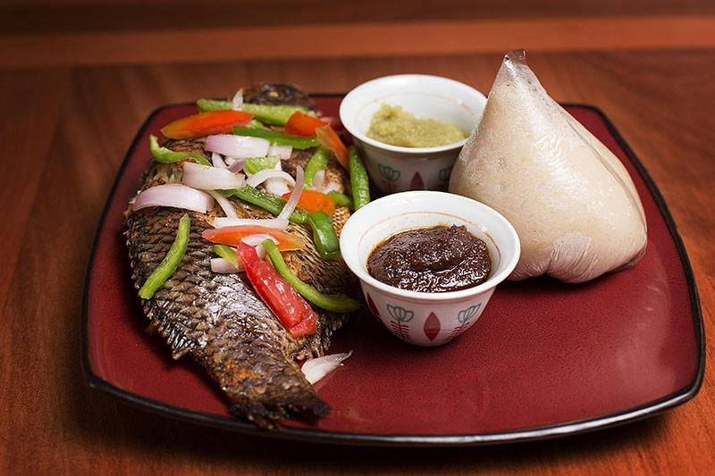

Banku Recipe

Description
It is a Ghanaian and Togolese of GaDangme(or Ga) descent dish which is
cooked by a mixture of fermented corn and cassava dough in hot water into
a smooth, whitish paste, served with soup, okra stew or a pepper sauce
with fish.
It is mostly preferred by the people of the Southern Regions of Ghana; the
Ewe people, the Fante people and the Ga-Adangbe people but also eaten
across the other regions in Ghana. Banku is found throughout Ghana, and is
one of the staple foods enjoyed by all tribes in the country although it
is mostly associated with the Ewe people of Ghana.
The GaDangme(or Ga) people have a softer variation of the food which they
call Banku, while the Fante people have a little drier variant of the dish
they call ɛtsew.
- 1 lb corn dough
- ¼ lb cassava dough
(or up to ½ lb)
- 1 teaspoon salt
- 1 cup water (or up to 2 cups)
Steps
-
Mix together the corn and cassava dough with water until smooth,
then transfer to high heat and stir continuously.
-
Depending on how moist the processed dough was at the start,
more water may be added so far as the consistency is solid,
but not too firm.
-
Turn the heat down to medium and allow the banku to steam in
the pot, surrounded by 1 or 2 tablespoons of water. This
should take 5 minutes.
-
Give the banku one final stir then take off the heat.
-
To serve, scoop the desired amount into a wet bowl and
swirl around until balls are formed.
-
Banku may be served with okro stew, fante fante or
grilled tilapia with shito.
- Enjoy